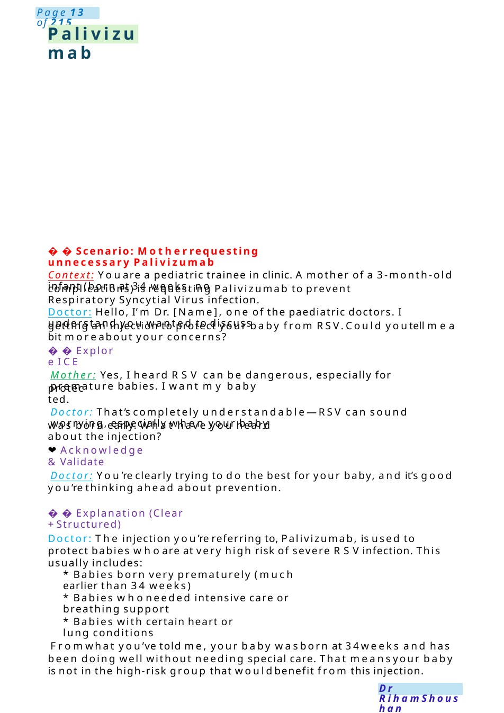
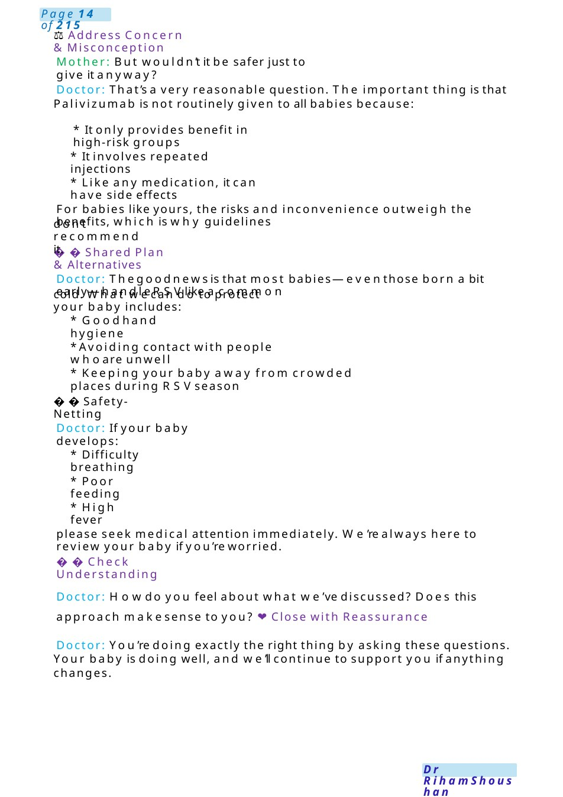
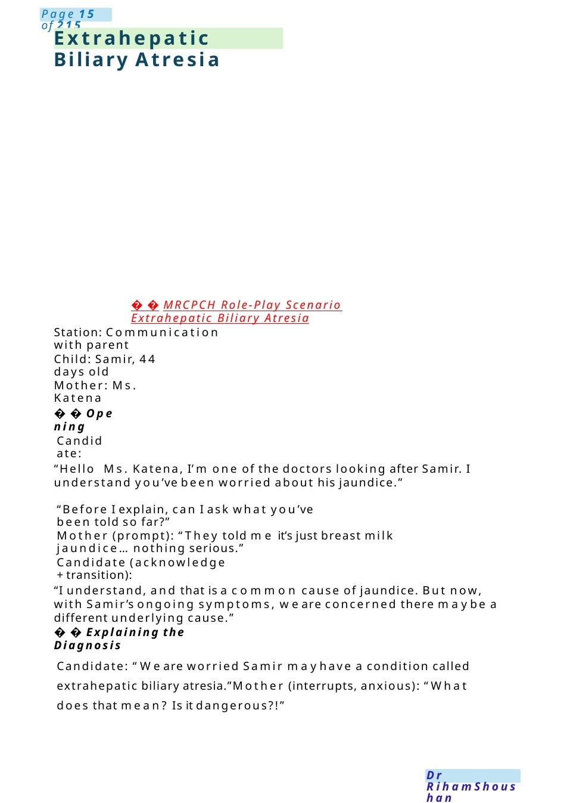

Palivizumab
was born early. What have you heard about the injection? getting an injection to protect your baby from RSV.Could youtell mea bit moreabout your concerns?
Scenario Summary
was born early. What have you heard about the injection? getting an injection to protect your baby from RSV.Could youtell mea bit moreabout your concerns?
Full Original Scenario

Palivizumab
was born early. What have you heard about the injection?
❤️Acknowledge &Validate
protected.
Explore ICE
getting an injection to protect your baby from RSV.Could youtell mea bit moreabout your concerns?
complications) is requesting Palivizumab to prevent Respiratory Syncytial Virus infection.
Scenario: Motherrequesting unnecessary Palivizumab
Context: Youare a pediatric trainee in clinic. Amother of a 3-month-old infant (born at 34 weeks, no
Doctor: Hello, I’m Dr. [Name], one of the paediatric doctors. I understand you wanted to discuss
Mother: Yes, I heard RSV can be dangerous, especially for premature babies. I want my baby
Doctor: That’s completely understandable—RSV can sound worrying, especially when your baby
Doctor: You’re clearly trying to do the best for your baby, and it’s good you’re thinking ahead about prevention.
Explanation (Clear +Structured)
Doctor: The injection you’re referring to, Palivizumab, is used to protect babies whoare at very high risk of severe RSVinfection. This usually includes:
- Babies born very prematurely (much earlier than 34 weeks)
- Babies whoneeded intensive care or breathing support
- Babies with certain heart or lung conditions
Fromwhat you’ve told me, your baby wasborn at 34weeks and has been doing well without needing special care. That meansyour baby is not in the high-risk group that wouldbenefit from this injection.

- Difficulty breathing
- Poor feeding
- High fever
please seek medical attention immediately. We’re always here to review your baby if you’re worried.
Safety-Netting
Doctor: If your baby develops:
- Keeping your baby away from crowded places during RSVseason
- Goodhand hygiene
- Avoiding contact with people whoare unwell
cold. What wecan do to protect your baby includes:
Shared Plan &Alternatives
don’t recommend it.
- It involves repeated injections
- Like any medication, it can have side effects
- It only provides benefit in high-risk groups
⚖️Address Concern &Misconception
Mother: But wouldn’t it be safer just to give it anyway?
Doctor: That’s a very reasonable question. The important thing is that Palivizumab is not routinely given to all babies because:
For babies like yours, the risks and inconvenience outweigh the benefits, which is why guidelines
Doctor: Thegoodnewsis that most babies—eventhose born a bit early—handleRSVlike a common
Check Understanding
Doctor: Howdo you feel about what we’ve discussed? Does this approach makesense to you? ❤️Close with Reassurance
Doctor: You’re doing exactly the right thing by asking these questions. Your baby is doing well, and we’ll continue to support you if anything changes.

Extrahepatic Biliary Atresia
MRCPCH Role-Play Scenario Extrahepatic Biliary Atresia
Station: Communication with parent
Child: Samir, 44 days old
Mother: Ms. Katena
Opening
Candidate:
“Hello Ms. Katena, I’m one of the doctors looking after Samir. I understand you’ve been worried about his jaundice.”
“Before I explain, can I ask what you’ve been told so far?”
Mother (prompt): “They told me it’s just breast milk jaundice... nothing serious.”
Candidate (acknowledge +transition):
“I understand, and that is a common cause of jaundice. But now, with Samir’s ongoing symptoms, we are concerned there maybe a different underlying cause.”
Explaining the Diagnosis
Candidate: “We are worried Samir mayhave a condition called extrahepatic biliary atresia.”Mother (interrupts, anxious): “What does that mean? Is it dangerous?!”